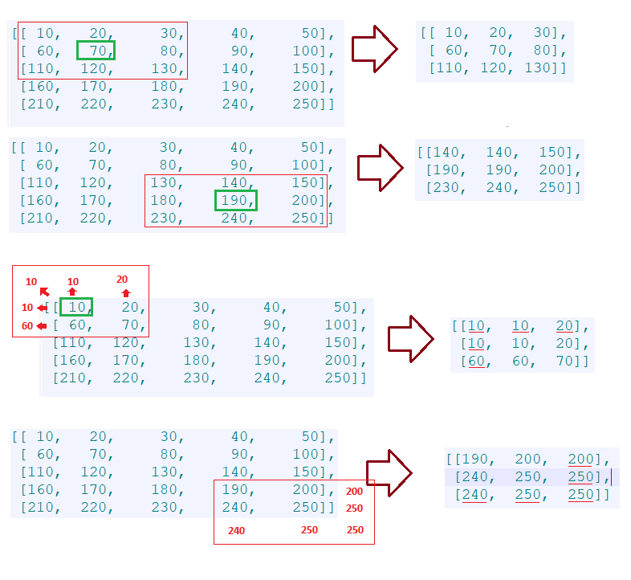

OpenCV.js is loading...
Crie uma função que seja capaz de cortar parte de outra matriz de acordo com o tamanho e posição que for passada via parâmetro ex: cortarMatriz(matriz, x,y, size) -> Matriz recebida x, y size retorno [[ 10, 20, 30, 40, 50], 1 1 3 -> [[ 10, 20, 30], [ 60, 70, 80, 90, 100], [ 60, 70, 80], [110, 120, 130, 140, 150], [110, 120, 130]] [160, 170, 180, 190, 200], [210, 220, 230, 240, 250]] Outro exemplo Matriz recebida x, y size retorno [[ 10, 20, 30, 40, 50], 3 3 3 -> [[140, 140, 150], [ 60, 70, 80, 90, 100], [190, 190, 200], [110, 120, 130, 140, 150], [230, 240, 250]] [160, 170, 180, 190, 200], [210, 220, 230, 240, 250]] Outro exemplo: quando o size for maior que o limite da matriz ele deve pegar os valores mais próximos da borda par acompletar as posições sem valores Matriz recebida x, y size retorno [[ 10, 20, 30, 40, 50], 0 0 3 -> [[10, 10, 20], [ 60, 70, 80, 90, 100], [10, 10, 20], [110, 120, 130, 140, 150], [60, 60, 70]] [160, 170, 180, 190, 200], [210, 220, 230, 240, 250]] Outro exemplo: quando o size for maior que o limite da matriz ele deve pegar os valores mais próximos da borda par acompletar as posições sem valores Matriz recebida x, y size retorno [[ 10, 20, 30, 40, 50], 4 4 3 -> [[190, 200, 200], [ 60, 70, 80, 90, 100], [240, 250, 250], [110, 120, 130, 140, 150], [240, 250, 250]] [160, 170, 180, 190, 200], [210, 220, 230, 240, 250]]